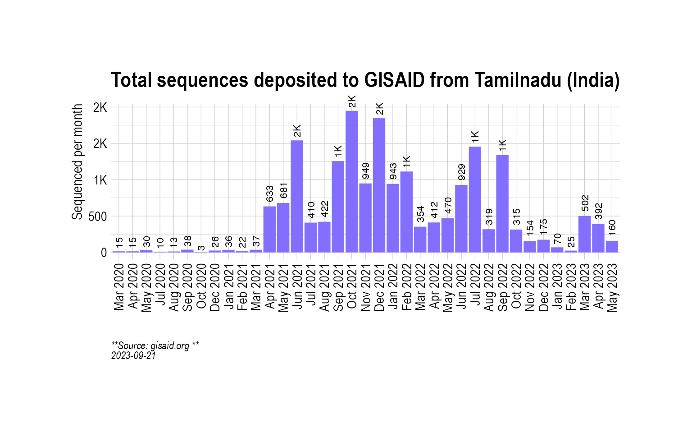
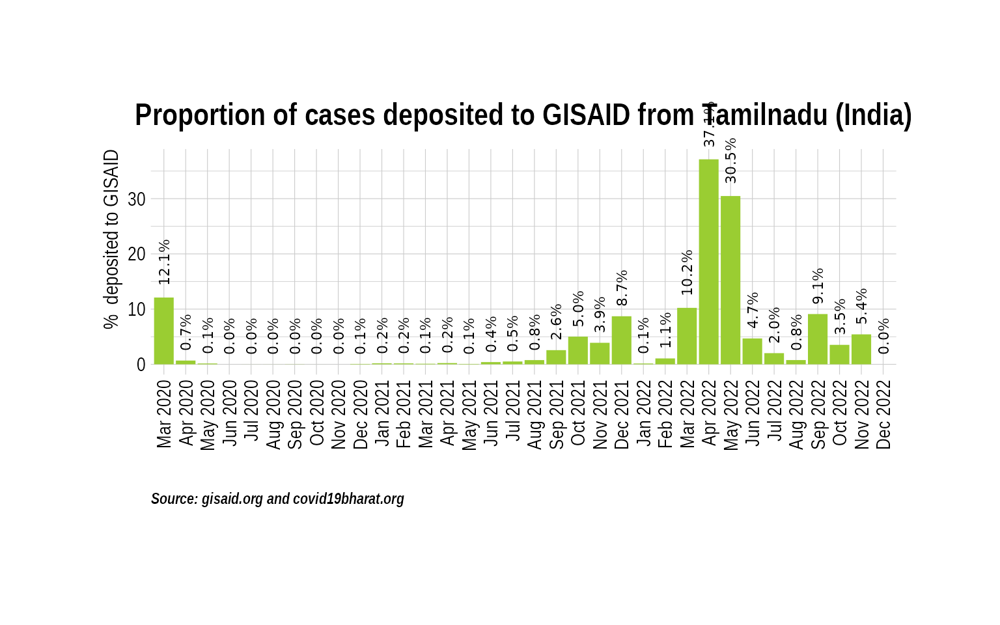
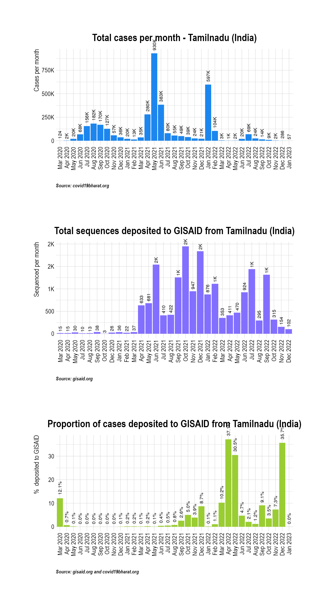
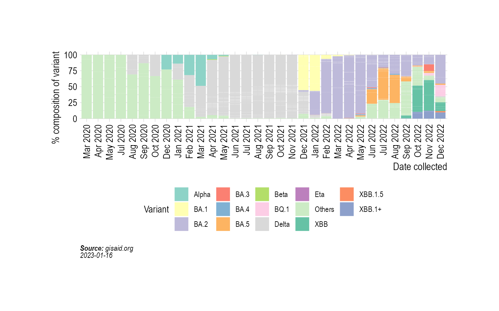
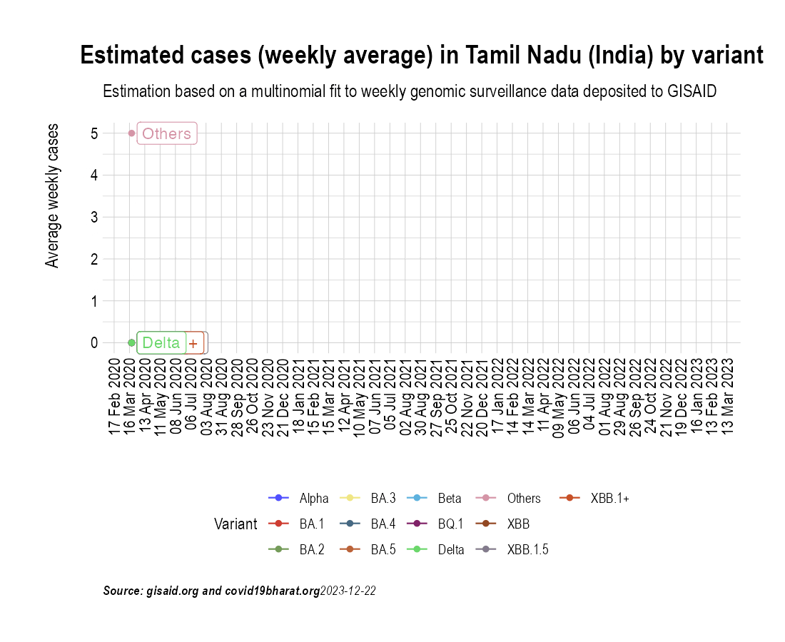
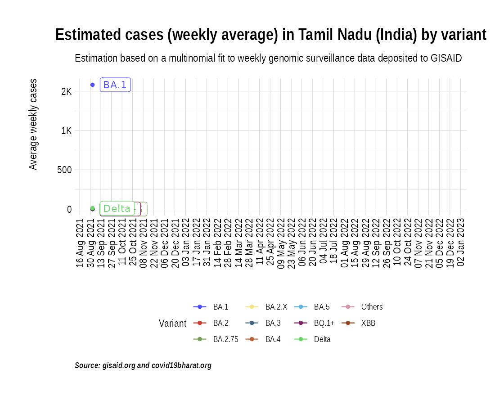
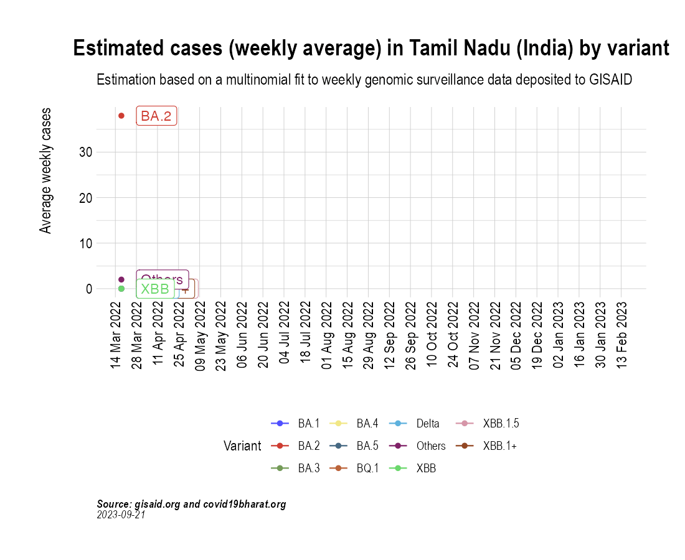

Animation of projected weekly cases - Tamil Nadu (India)
Source:vignettes/VariantAnimation-Tamilnadu.Rmd
VariantAnimation-Tamilnadu.Rmd
suppressPackageStartupMessages({
library(covmuller)
library(tidyverse)
})
theme_set(CovmullerTheme())Get variants data for India
gisaid_metadata <- qs::qread("~/github/2021_Covid19_surveillance/data/all_metadata/metadata_tsv_2022_12_22.qs")
gisaid_india <- FilterGISAIDIndia(gisaid_metadata_all = gisaid_metadata)
vocs <- GetVOCs()
omicron <- vocs[["omicron"]]
vocs[["omicron"]] <- NULL
custom_voc_mapping <- list(
`BA.1.1` = "BA.1",
`BA.1` = "BA.1",
`BA.2` = "BA.2",
`BA.2.10` = "BA.2.X",
`BA.2.10.1` = "BA.2.X",
`BA.2.12` = "BA.2.X",
`BA.2.12.1` = "BA.2.X",
`BA.3` = "BA.3",
`BA.4` = "BA.4",
`BA.5` = "BA.5",
`BA.2.74` = "BA.2.X",
`BA.2.75` = "BA.2.75",
`BA.2.76` = "BA.2.X",
`XBB.*` = "XBB",
`BQ.1` = "BQ.1+",
`BQ.1.*` = "BQ.1+"
)
gisaid_india <- gisaid_india %>%
filter(pangolin_lineage != "None") %>%
filter(pangolin_lineage != "Unassigned")
gisaid_india <- CollapseLineageToVOCs(
variant_df = gisaid_india,
vocs = vocs,
custom_voc_mapping = custom_voc_mapping,
summarize = FALSE
)Get monthly cases for Tamilnadu
Tamilnadu_monthly_cases <- GetIndiaConfirmedCasesMonthlyLong() %>% filter(State == "Tamil Nadu")
head(Tamilnadu_monthly_cases)## MonthYear State value type
## 1 Mar 2020 Tamil Nadu 124 Confirmed
## 2 Apr 2020 Tamil Nadu 2199 Confirmed
## 3 May 2020 Tamil Nadu 20010 Confirmed
## 4 Jun 2020 Tamil Nadu 67834 Confirmed
## 5 Jul 2020 Tamil Nadu 155692 Confirmed
## 6 Aug 2020 Tamil Nadu 182182 ConfirmedGet weekly cases for Tamilnadu
Tamilnadu_seq_stats <- TotalSequencesPerMonthCountrywise(gisaid_india %>% filter(State == "Tamil Nadu"), rename_country_as_state = TRUE)
p2 <- BarPlot(Tamilnadu_seq_stats, ylabel = "Sequenced per month", color = "slateblue1", label_si = TRUE, title = "Total sequences deposited to GISAID from Tamilnadu (India)", caption = "**Source: gisaid.org <br>**")
p2
Overall, how much has Tamilnadu sequenced over months?
While the absolute numbers are informative, a more useful metric is the proportion of cases (cases sequenced over total cases) that are getting sequenced. Here we look at the proportion of cases that have been sequenced in India over the course of the pandemic:
Tamilnadu_monthly_cases_tmp <- Tamilnadu_monthly_cases %>% select(MonthYear, value)
Tamilnadu_monthly_cases_tmp$State <- "India"
Tamilnadu_monthly_cases_tmp$type <- "Confirmed"
Tamilnadu_monthly_cases_tmp <- Tamilnadu_monthly_cases_tmp %>% select(MonthYear, State, value, type)
sequencing_proportion <- CombineSequencedCases(
cases_sequenced = Tamilnadu_seq_stats,
confirmed_long = Tamilnadu_monthly_cases_tmp
)
p3 <- BarPlot(sequencing_proportion, yaxis = "percent_sequenced_collected", ylabel = "% deposited to GISAID", color = "yellowgreen", title = "Proportion of cases deposited to GISAID from Tamilnadu (India)", caption = "**Source: gisaid.org and covid19bharat.org<br>**")
p3
p1 / p2 / p3
Distribution of variants
state_month_counts <- SummarizeVariantsMonthwise(gisaid_india %>% filter(State == "Tamil Nadu"))
state_month_counts$State <- "Tamil Nadu"
state_month_prevalence <- CountsToPrevalence(state_month_counts)
vocs <- GetVOCs()
omicron <- vocs[["omicron"]]
vocs[["omicron"]] <- NULL
state_month_prevalence <- CollapseLineageToVOCs(
variant_df = state_month_prevalence,
vocs = vocs,
custom_voc_mapping = custom_voc_mapping, summarize = FALSE
)
p5 <- StackedBarPlotPrevalence(state_month_prevalence)
p5
Project weekly cases to variant prevalence data from GISAID
confirmed_subset_dateweekwise_long <- GetIndiaConfirmedCasesWeeklyLong()
gisaid_dist_weekwise <- SummarizeVariantsWeekwise(gisaid_india %>% filter(State == "Tamil Nadu") %>% arrange(WeekYearCollected))
confirmed_subset_dateweekwise_long_dist <- confirmed_subset_dateweekwise_long %>%
filter(State %in% c("Tamil Nadu")) %>%
rename(n = value) %>%
rename(WeekYearCollected = WeekYear) %>%
dplyr::select(-contains("type")) %>%
filter(WeekYearCollected >= min(gisaid_dist_weekwise$WeekYearCollected))
confirmed_subset_dateweekwise_long_dist$State <- NULL
voc_to_keep <- gisaid_dist_weekwise %>%
group_by(lineage_collapsed) %>%
summarise(n_sum = sum(n)) %>%
filter(n_sum > 1) %>%
pull(lineage_collapsed) %>%
unique()
gisaid_dist_weekwise <- gisaid_dist_weekwise %>% filter(lineage_collapsed %in% voc_to_keep)
india_cases_pred_prob_sel_long <- FitMultinomWeekly(gisaid_dist_weekwise, confirmed_subset_dateweekwise_long_dist)## # weights: 52 (36 variable)
## initial value 44686.547706
## iter 10 value 21399.689908
## iter 20 value 16521.515612
## iter 30 value 13111.438351
## iter 40 value 12638.715261
## iter 50 value 12394.753737
## iter 60 value 12275.227141
## iter 70 value 12158.591354
## iter 80 value 12154.271355
## iter 90 value 12152.134394
## iter 100 value 12128.623844
## iter 110 value 12108.475210
## iter 120 value 12091.444114
## iter 130 value 12066.162096
## iter 140 value 12056.541950
## iter 150 value 12043.194564
## iter 160 value 12042.890339
## iter 170 value 12031.589338
## iter 180 value 12027.041938
## iter 190 value 12019.623286
## iter 200 value 12013.084567
## iter 210 value 12010.213405
## iter 220 value 11989.045768
## iter 230 value 11988.678294
## iter 240 value 11987.779549
## iter 250 value 11985.908144
## iter 260 value 11985.257146
## iter 270 value 11984.795123
## iter 280 value 11983.734540
## iter 290 value 11982.994008
## iter 300 value 11980.604878
## iter 310 value 11980.437179
## iter 320 value 11980.204137
## iter 330 value 11979.944721
## iter 340 value 11979.117453
## iter 350 value 11978.610666
## iter 360 value 11978.276032
## iter 370 value 11975.967460
## iter 380 value 11975.927113
## iter 390 value 11975.643142
## iter 400 value 11975.512636
## iter 410 value 11975.087203
## iter 420 value 11973.273023
## iter 430 value 11972.550150
## iter 440 value 11972.051721
## iter 450 value 11972.021178
## iter 460 value 11971.877933
## iter 470 value 11971.753399
## iter 480 value 11971.653108
## iter 490 value 11970.738085
## iter 500 value 11969.818622
## iter 510 value 11969.429253
## iter 520 value 11969.015735
## iter 530 value 11968.910731
## iter 540 value 11968.636598
## iter 550 value 11968.446745
## iter 560 value 11968.054280
## iter 570 value 11967.118596
## iter 580 value 11966.781357
## final value 11966.025804
## converged
the_anim <- PlotVariantPrevalenceAnimated(india_cases_pred_prob_sel_long, title = "Estimated cases (weekly average) in Tamil Nadu (India) by variant", caption = "**Source: gisaid.org and covid19bharat.org**", date_breaks = "28 days")
gganimate::anim_save(filename = here::here("docs/articles/Tamilnadu_animated.gif"), animation = the_anim)
Look at cases after January, 2022 only:
confirmed_subset_dateweekwise_long <- GetIndiaConfirmedCasesWeeklyLong()
confirmed_subset_dateweekwise_long <- confirmed_subset_dateweekwise_long %>%
filter(WeekYear >= tsibble::yearweek("2021 W35")) %>%
filter(State %in% c("Tamil Nadu")) %>%
group_by(WeekYear) %>%
summarise(n = sum(value)) %>%
arrange(WeekYear) %>%
rename(WeekYearCollected = WeekYear)
gisaid_dist <- gisaid_india %>%
filter(MonthYearCollected > "Dec 2021") %>%
filter(State == "Tamil Nadu") %>%
arrange(WeekYearCollected)
gisaid_weekwise <- SummarizeVariantsWeekwise(gisaid_dist)
voc_to_keep <- gisaid_weekwise %>%
group_by(lineage_collapsed) %>%
summarise(n_sum = sum(n)) %>%
filter(n_sum > 1) %>%
pull(lineage_collapsed) %>%
unique()
gisaid_weekwise <- gisaid_weekwise %>% filter(lineage_collapsed %in% voc_to_keep)
cases_pred_prob_sel_long <- FitMultinomWeekly(gisaid_weekwise, confirmed_subset_dateweekwise_long)## # weights: 44 (30 variable)
## initial value 18012.989289
## iter 10 value 10431.112086
## iter 20 value 9123.627952
## iter 30 value 8883.593171
## iter 40 value 8787.062888
## iter 50 value 8774.981446
## iter 60 value 8772.115514
## iter 70 value 8771.135386
## iter 80 value 8768.916081
## iter 90 value 8749.079897
## iter 100 value 8727.428576
## iter 110 value 8707.094662
## iter 120 value 8705.577711
## final value 8705.573822
## converged
the_anim <- PlotVariantPrevalenceAnimated(cases_pred_prob_sel_long, title = "Estimated cases (weekly average) in Tamil Nadu (India) by variant", caption = "**Source: gisaid.org and covid19bharat.org<br>**")## `geom_line()`: Each group consists of only one observation.
## ℹ Do you need to adjust the group aesthetic?
## `geom_line()`: Each group consists of only one observation.
## ℹ Do you need to adjust the group aesthetic?
gganimate::anim_save(filename = here::here("docs/articles/Tamilnadu_animated_2021.gif"), animation = the_anim)
Look at cases in the last few weeks:
confirmed_subset_dateweekwise_long <- GetIndiaConfirmedCasesWeeklyLong()
confirmed_subset_dateweekwise_long <- confirmed_subset_dateweekwise_long %>%
filter(WeekYear >= tsibble::yearweek("2022 W12")) %>%
filter(State %in% c("Tamil Nadu")) %>%
group_by(WeekYear) %>%
summarise(n = sum(value)) %>%
arrange(WeekYear) %>%
rename(WeekYearCollected = WeekYear)
gisaid_dist <- gisaid_india %>%
filter(MonthYearCollected > "Dec 2021") %>%
filter(State == "Tamil Nadu") %>%
arrange(WeekYearCollected)
gisaid_weekwise <- SummarizeVariantsWeekwise(gisaid_dist)
voc_to_keep <- gisaid_weekwise %>%
group_by(lineage_collapsed) %>%
summarise(n_sum = sum(n)) %>%
filter(n_sum > 1) %>%
pull(lineage_collapsed) %>%
unique()
gisaid_weekwise <- gisaid_weekwise %>% filter(lineage_collapsed %in% voc_to_keep)
cases_pred_prob_sel_long <- FitMultinomWeekly(gisaid_weekwise, confirmed_subset_dateweekwise_long)## # weights: 44 (30 variable)
## initial value 18012.989289
## iter 10 value 10431.112086
## iter 20 value 9123.627952
## iter 30 value 8883.593171
## iter 40 value 8787.062888
## iter 50 value 8774.981446
## iter 60 value 8772.115514
## iter 70 value 8771.135386
## iter 80 value 8768.916081
## iter 90 value 8749.079897
## iter 100 value 8727.428576
## iter 110 value 8707.094662
## iter 120 value 8705.577711
## final value 8705.573822
## converged
the_anim <- PlotVariantPrevalenceAnimated(cases_pred_prob_sel_long, title = "Estimated cases (weekly average) in Tamil Nadu (India) by variant", caption = "**Source: gisaid.org and covid19bharat.org<br>**")## `geom_line()`: Each group consists of only one observation.
## ℹ Do you need to adjust the group aesthetic?
## `geom_line()`: Each group consists of only one observation.
## ℹ Do you need to adjust the group aesthetic?
gganimate::anim_save(filename = here::here("docs/articles/Tamilnadu_animated_2022.gif"), animation = the_anim)